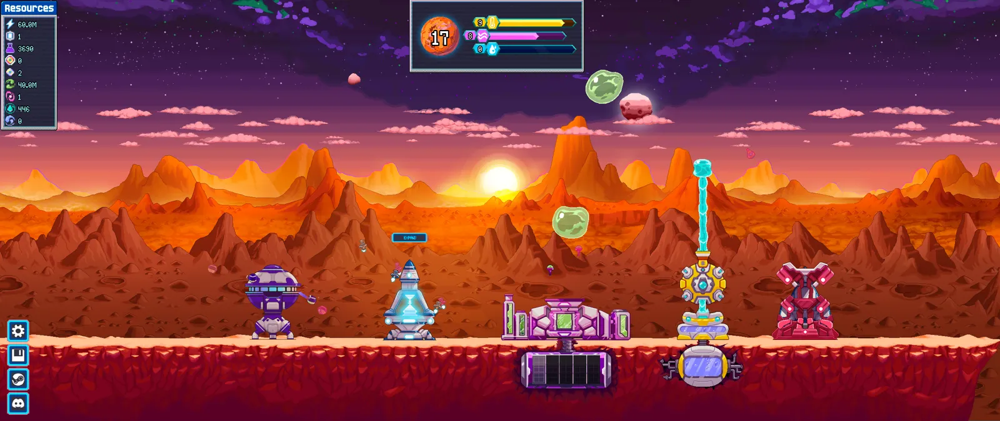
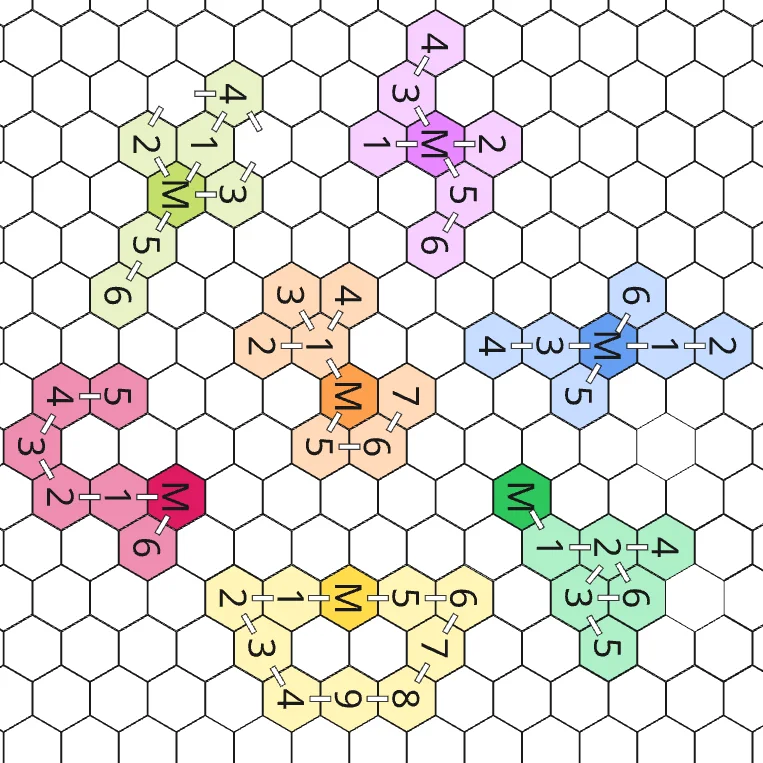

Choose how you play
A real choice changes how you play, not which number grows.
Picking +100% of X or +100% of Y is a calculation, not a decision. Each tree changes a rule instead: chance, timing, drone count, how resources feed each other.
Use: See how a talent tree turned every prestige into a choice about how to play.
The goals, rules, trees and numbers behind the Frontier Technology Panel, the game's talent screen. Values on this page are illustrative and a few names are changed to avoid spoilers. The structure, targets and method are the real ones.
Everything the rest of this page builds on.
Mars Incremental is an incremental game about terraforming Mars. You run a base: a row of buildings with drones working inside them, each building producing a resource such as power, gas or water. New buildings unlock as the planet progresses, and a full game is projected at about four hours.
Resources buy more drones and upgrades, and push three planetary meters: temperature, atmosphere and humidity. As the meters fill, the planet gains terraforming levels, the main measure of progress. Growth is fast at first and then slows down. When it slows enough, the player resets the base and starts a new one, stronger than the last. That reset is where the talents live.

Like every incremental game, Mars hits a wall: production slows down until starting over is faster than pushing on. That reset had to pay off.
Inside a base, the upgrades follow a mostly linear path. So the reset had to bring what the base couldn't: power that carries over between bases, choices that belong to the player, and a place where min-maxers can plan their builds.
What the player should feel. Every rule and number below answers to these four.
A real choice changes how you play, not which number grows.
Picking +100% of X or +100% of Y is a calculation, not a decision. Each tree changes a rule instead: chance, timing, drone count, how resources feed each other.
Each point brings the next terraforming levels 6 to 12% sooner.
Even the smallest rank has to be felt where the player is looking: the road to the next level. Opening a tree has to hit harder: its Major talent changes how the base feels to play.
Some talents reward your hands, others reward your absence.
Holding the mouse on a building pays off for active players. Other talents pay off for players who check in from time to time. The Speed tree, below, has one of each.
Refunds turn every prestige into an experiment.
Points can be refunded between bases, so players are free to try a build and change their minds. Min-maxers get room to find the most efficient routes of talents and resets.
Where talents enter the loop, and the rules engineering and art built from.
Drones, buildings and resources.
Each terraforming level grants 1 Specialization point.
Growth slows until a reset is the faster path.
Reset the base and spend the points on talents. They carry over to every base that follows.
Starts faster and goes further than the last one.
Then back to step 1. Each time the planet reaches its next terraforming stage, the player also earns a Breakthrough point to open a new tree.
Each tree changes a different rule of the base, which is what makes the choice between them a real one.


The tree the balance section measures, talent by talent.
Speed is the tree about tempo: the more drones a building has, the faster it works. Its talents carry the goals into play. Greater Incentive rewards active players for holding a building, The Drones Remember keeps that bonus going while they are away, and Life Is Not a Race reshapes a build that has stacked a lot of speed.
How to read it: M is the Major, the numbers are talents, and a line means the next talent opens once the one before it is maxed. Click a talent to read its tooltip. Values are illustrative.
Talents speak different languages. The projection translates them into the one players feel.
Seven trees and dozens of talents, with effects that don't compare: one adds speed, another a chance, another drones. Playtests show how a talent feels, but not whether it is worth as much as its neighbors. So the model gives every point one price, in the unit players actually feel: time.
A point is worth how much sooner the next three terraforming levels arrive, in the base that starts right after it is bought. The band is 6 to 12% per point.
A second measure looks at the whole game: remove the talent and replay, and the game should end 10 to 30% later, per point spent. It is bigger than the first because gains compound: a faster base reaches every later reset sooner.
The rule: no talent over the top of the band in either measure, and at least one of the two measures inside it. Both are measured in a simulator: a script built from the game's own numbers and code that plays the game with a model player.
In the game's code, a building's productivity is 1 plus all its speed bonuses added together. One talent, Life Is Not a Race, also multiplies it. A point is worth how much productivity grows, averaged across the buildings with drones.
m = geometric mean of (after / before)
In the simulator, all production was multiplied by a fixed amount at seven different moments of the game, and the time to the next levels was measured. It shrank the same way every time: for small gains, each 1% more production saves about 0.9% of time.
time saved = 1 − m−0.9
The 6 to 12% band, read as production, is a multiplier of about ×1.07 to ×1.15 per point.
A building that already has +150% speed runs at 2.5×. A +20% bonus takes it to 2.7×: only 8% more for that building. And the base moves at the pace of all four buildings together, so 8% on one of them is about 2% for the base. Move the sliders. Illustrative numbers.
Each talent gets two grades, one per measure. B is inside the band. A is over the top (over 12% for the next levels, over 30% for the whole game) and S far over it. C is under the band and D far under it (under 2% and 3%). The table shows the talents before tuning. Early and late mean Speed opened as the first tree or a later one. Measured for a good human player (acts every 5 seconds, holds the main building 70% of the time) over a projected 4-hour game, with the tree opened early and late. Results rounded.
| Talent | Next 3 levels, per point | Whole game, per point | Verdict |
|---|---|---|---|
| Unchained Reactors | C to B about 4 to 6% | B about 11% | Passes the rule on the whole game. Tuned anyway, see below. |
| Weak Link | B to C 9% early, 3% late | C about 4% | Passes on the next levels when Speed comes first. |
| Planetary Momentum | C about 3 to 5% | B about 19% | Passes. Grows with the game, as designed. |
| Greater Incentive | D under 1% | D about 1% | Fails. A shape problem, not a number. |
| The Drones Remember | D under 1% | D about 1% | Fails, same cause. |
| Life Is Not a Race | C to S 5 to 25% | S far over the band | Fails. A shape problem, not a number. |
An earlier model, from September, rated Life Is Not a Race as fine, and its values had been tuned to fit.
While rebuilding the model, the AI compared each formula with the game's code. In the model, the talent multiplied production by speed already cut in half. In the game, it multiplies by the full speed from talents.
The simulator was corrected to follow the code, and now matches it level by level within 1 to 3 percentage points.
The talent was much stronger than the old model said. That is why it shows up above as failing, far over the band.
One talent only needed a bigger number. The three that fail need more than that: for all of them, a bigger or smaller number wouldn't help, and the formula itself has to change. Two of them are the talents built for the active or idle goal, so the goal stands and their shape doesn't. This is the critique step of the process: the model shows where a talent breaks, design decides what it becomes.
At first it sat under the band on the next levels. A higher value per reactor puts it inside both measures, at about 24% per point for the whole game. One step more reaches about 32%, over the top, so the tuning stops there.
Tested in the simulator: inside both bands.
It halves every speed bonus, then multiplies production by the speed the building gets from talents. Cutting its value doesn't work: the halving would make the first rank slow the player down by about 10%, and the late game would still explode, because those talent bonuses keep growing.
Proposed: a cap, or growth slower than those bonuses.
Even five times the value would give about 3% per point: the holding bonus lives on one building of four and is diluted by the speed that building already has.
Proposed: reach more buildings, or multiply instead of add.
As lead game designer, I designed the system: its goals, the rules, the seven trees, every talent and the balance targets. I built the balance model with AI assistance (Claude), checking it against the game's code and a simulator of the game.
With the art team, I worked on the icons, the panels, the building elements and the feedback, under another person's art direction. Programming and production management were done by teammates.